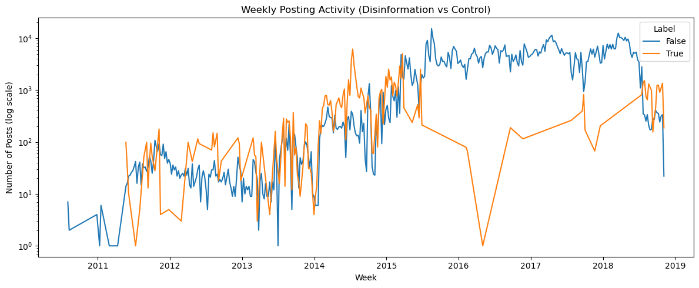

import pandas as pd
import numpy as np
import torch
from sklearn.model_selection import train_test_split
from sklearn.metrics import accuracy_score, precision_recall_fscore_support
import os
from pathlib import Path
from transformers import (
AutoTokenizer,
AutoModel,
Trainer,
TrainingArguments,
DataCollatorWithPadding,
)
from datasets import Dataset
from sklearn.metrics import accuracy_score, precision_recall_fscore_support
import matplotlib.pyplot as plt
import seaborn as snsIntroduction to Sentiment Analysis: Identifying and Mapping Disinformation Campaigns using NLP
Module adapted from UBC COMET, prepared originally by Anneke Dresselhuis and Irene Berezin, by Irene Berezin, Anna Kovtunenko, Jalen Faddick and the prAxIs UBC team.
Loading and Installing Packages
Before continuing, run the code cell below to install the necessary packages.
Disinformation in the Information Age
Disinformation is not new, but with the rise of digital platforms and generative AI, its scale, speed, and sophistication have grown exponentially. From elections and pandemics to social justice movements and international conflicts, false or misleading content is being spread online to manipulate emotions and polarize public opinion.
The challenge today is not just the volume of disinformation, but how convincing and targeted it has become. Former U.S. Director of National Intelligence Avril Haines describes how state-sponsored campaigns, like Russia’s Kremlin, now operate using “a vast multimedia influence apparatus,” including bots, cyber-actors, fake news websites, and social media trolls. Large language models (LLMs) can now generate human-like tweets, comments, and articles at scale. Combined with deepfakes, doppelgänger sites, and AI-generated personas, these tools allow bad actors to craft propaganda that appears authentic, emotionally resonant, and difficult to detect.
In this notebook, we’ll use machine learning — specifically, pretrained large language models — to study the language of disinformation in a real dataset of English and Russian-language tweets. These tweets include both propagandist and non-propagandist content.
Learning Outcomes
By the end of this module, you will be able to uncover hidden patterns in the framing of disinformation using tools like:
- Sentiment analysis to detect emotional tone (positive, negative, neutral)
- Toxicity analysis to identify harmful or aggressive language (e.g., insults, threats)
- Statistical testing to compare patterns between tweet types and languages (e.g., English vs. Russian)
You’ll learn how to work with pretrained LLMs, interpret model predictions, and use basic statistical methods to answer questions like:
- Are propagandist tweets more emotionally charged or toxic than others?
- Do they use different rhetorical strategies in different languages?
- Can we identify signals that indicate a tweet is part of a disinformation campaign?
Through this analysis, we’ll explore how AI, while sometimes a tool for harm, can also help us better understand and detect the patterns of disinformation when working with large amounts of social data.
0. Preliminary data analysis
In order to get started using machine learning to map disinformation campaigns, we need to set our machines up to be able to:
- Open and interpret the dataset.
- Visualize key aspects of the data.
- Access a pre-trained machine learning model that can be used on our data.
To do this, we are using the import statement which allows us to access the functions and capabilities of each module. The modules we are using allow us to complete differenet tasks. We are using a coding language called Python to do communicate which capabilities we want to use and we will continue writing in Python to use these capabilities. It is what we are using to communicate what libraries or capabilities we want to use. We will learn more about what each module is doing as we continue to use them.
Now that we have successfully accessed all of the functions we need to carry out our disinformation investigation, we can start to look into the data we are working with. We are going to be using the pandas library, which is a popular tool to read and handle data. The block of code below will first load in the dataset named russian_disinformation_tweets.csv and then, based on the information contained in the file, it will print the specified information. In this case we are looking at three different features of our data:
- The names of the columns in our dataset
- The number of tweets not labeled as control i.e. russian disinformation
- The number of tweets labeled as control i.e. not russian disinformation
The code below also does a little bit of housekeeping, by using the function tweets.rename to change the column names from post text and is_control to text and labels respectively.
Now, take a look a the output of this block and identify the number of disinformation tweets found in the data.
tweets = pd.read_csv("soci_270/russian_disinformation_tweets.csv")
print(tweets.columns)
print(len(tweets[tweets["is_control"] == False]))
print(len(tweets[tweets["is_control"] == True]))
tweets = tweets.rename(columns={"post_text": "text", "is_control": "labels"})Index(['Unnamed: 0', 'postid', 'post_text', 'application_name',
'post_language', 'in_reply_to_postid', 'in_reply_to_accountid',
'post_time', 'accountid', 'account_profile_description',
'follower_count', 'following_count', 'account_creation_date',
'is_repost', 'reposted_accountid', 'reposted_postid', 'hashtags',
'urls', 'account_mentions', 'is_control'],
dtype='object')
920761
90291To continue exploring the data, we are going to take a look at tweets that are labeled as control tweets, meaning they are not Russian disinformation. Take a look at a few of the characteristics of the tweets below, looking at both the text of the tweets and the data associated with each post.
print(tweets[tweets["labels"] == True]) Unnamed: 0 postid text application_name post_language in_reply_to_postid in_reply_to_accountid post_time accountid account_profile_description follower_count following_count account_creation_date is_repost reposted_accountid reposted_postid hashtags urls account_mentions labels
36 36 40e914fba1a0ff1ddb95ec7b9f341b674867e6d966 Is there any #TT's owt there ??? e2f11704f681592822c58d01c1f071fe794030bca3 en NaN NaN 2011-05-29 18:48:15 e2eb3e216298be1e56dc7ae40ae6342681d0480224 NaN 8071 2635 2010-03-08 False NaN NaN ['TT'] [] [] True
37 37 6c4c24c32517adff14be196530caee065ddf6bd648 @0a70d7a84c104c202cfaab50ab10d3c518dc548e15: RT @b4b33e49d2accce12ab2ebe0707a0a1f85c734111d Why do men act like they haven't seen females before e2f11704f681592822c58d01c1f071fe794030bca3 en NaN NaN 2011-05-29 18:48:41 e2eb3e216298be1e56dc7ae40ae6342681d0480224 NaN 8071 2635 2010-03-08 False NaN NaN [] [] ['0a70d7a84c104c202cfaab50ab10d3c518dc548e15'\n 'b4b33e49d2accce12ab2ebe0707a0a1f85c734111d'] True
38 38 ee1f19fcb24b60e3da91d769f77b41e42ab4a28f48 When does [CHEATING] get old to the Male Race? #TheShitIsOld e2f11704f681592822c58d01c1f071fe794030bca3 en NaN NaN 2011-05-29 18:49:08 e2eb3e216298be1e56dc7ae40ae6342681d0480224 NaN 8071 2635 2010-03-08 False NaN NaN ['TheShitIsOld'] [] [] True
39 39 851bc955e4bdc93f53b449b69cbf30c7c74e4b7808 I swear my next relationship will be my last relationship #ImGoingAllIn e2f11704f681592822c58d01c1f071fe794030bca3 en NaN NaN 2011-05-29 18:49:30 e2eb3e216298be1e56dc7ae40ae6342681d0480224 NaN 8071 2635 2010-03-08 False NaN NaN ['ImGoingAllIn'] [] [] True
40 40 4648fca3629a67e8ad48ed51a0a199a28644dbf6dc My Love is 1 of a Kind .. #IMJUSSAYIN e2f11704f681592822c58d01c1f071fe794030bca3 en NaN NaN 2011-05-29 18:49:46 e2eb3e216298be1e56dc7ae40ae6342681d0480224 NaN 8071 2635 2010-03-08 False NaN NaN ['IMJUSSAYIN'] [] [] True
... ... ... ... ... ... ... ... ... ... ... ... ... ... ... ... ... ... ... ... ...
1001655 1001655 9db67572a57871d3388a9934960702d34c245589b4 #Capitalism Politics Danielle Smith: Green washing Crony Capitalism: Have you ever heard of ... https://94abba5814ae108beb90a08fe01e93d70c0554adc6 #UniteBlue #Tcot b9052708258f305d40d00a13826c6cb32520a2d48c en NaN NaN 2016-09-20 23:59:57 0b98dddd3a835f273453e487379a183e9853e5cdf1 #Women #News Worldwide #Feminism #LikeAGirl #LGBT #Islamophobia #DomesticViolence #UniteBlue #AnimalRights #Gunsense Powered by 8ed7345229191fb4a045e4ac77b61f96f6a0d542f1 6873 7559 2015-07-02 False NaN NaN ['Capitalism' 'UniteBlue' 'Tcot'] ['https://94abba5814ae108beb90a08fe01e93d70c0554adc6'] [] True
1001656 1001656 8c9d7dd73652693d61a93019b3d41d359cc95f06e2 #Capitalism Politics Fighting Against Capitalism: The Worker's World Party: The main concept... https://b6e0a9ec03240271d530314f369086e3394e77c0ff #UniteBlue #Tcot b9052708258f305d40d00a13826c6cb32520a2d48c en NaN NaN 2016-09-20 23:59:57 0b98dddd3a835f273453e487379a183e9853e5cdf1 #Women #News Worldwide #Feminism #LikeAGirl #LGBT #Islamophobia #DomesticViolence #UniteBlue #AnimalRights #Gunsense Powered by 8ed7345229191fb4a045e4ac77b61f96f6a0d542f1 6873 7559 2015-07-02 False NaN NaN ['Capitalism' 'UniteBlue' 'Tcot'] ['https://b6e0a9ec03240271d530314f369086e3394e77c0ff'] [] True
1001657 1001657 124e335840443095f27089f3bb7d90d162bae48664 #Capitalism Politics Connections Brings 21st Century Learning to Conn: As an example, one sh... https://0e15bbb9dc32bd78e6ec40c853dd1c91854f4e8196 #UniteBlue #Tcot b9052708258f305d40d00a13826c6cb32520a2d48c en NaN NaN 2016-09-20 23:59:57 0b98dddd3a835f273453e487379a183e9853e5cdf1 #Women #News Worldwide #Feminism #LikeAGirl #LGBT #Islamophobia #DomesticViolence #UniteBlue #AnimalRights #Gunsense Powered by 8ed7345229191fb4a045e4ac77b61f96f6a0d542f1 6873 7559 2015-07-02 False NaN NaN ['Capitalism' 'UniteBlue' 'Tcot'] ['https://0e15bbb9dc32bd78e6ec40c853dd1c91854f4e8196'] [] True
1001658 1001658 8261e81729d1870392f1d73d018e999ba127ec15c7 #Capitalism Politics Why Today's Neoliberal Global Order Is Incompatible With Democracy: In ... https://a24f8ce30ed3f43fcac0554bd9930f24e833c847e6 #UniteBlue #Tcot b9052708258f305d40d00a13826c6cb32520a2d48c en NaN NaN 2016-09-20 23:59:58 0b98dddd3a835f273453e487379a183e9853e5cdf1 #Women #News Worldwide #Feminism #LikeAGirl #LGBT #Islamophobia #DomesticViolence #UniteBlue #AnimalRights #Gunsense Powered by 8ed7345229191fb4a045e4ac77b61f96f6a0d542f1 6873 7559 2015-07-02 False NaN NaN ['Capitalism' 'UniteBlue' 'Tcot'] ['https://a24f8ce30ed3f43fcac0554bd9930f24e833c847e6'] [] True
1001659 1001659 2bc9e15bffbf700bbf3b40cb32b0de4a65244301b8 #Capitalism Politics Poverty, violence and globalised indifference: And it is capitalism tha... https://cf2d7a77f202eba8af6f2001922572a1b3429f0409 #UniteBlue #Tcot b9052708258f305d40d00a13826c6cb32520a2d48c en NaN NaN 2016-09-20 23:59:58 0b98dddd3a835f273453e487379a183e9853e5cdf1 #Women #News Worldwide #Feminism #LikeAGirl #LGBT #Islamophobia #DomesticViolence #UniteBlue #AnimalRights #Gunsense Powered by 8ed7345229191fb4a045e4ac77b61f96f6a0d542f1 6873 7559 2015-07-02 False NaN NaN ['Capitalism' 'UniteBlue' 'Tcot'] ['https://cf2d7a77f202eba8af6f2001922572a1b3429f0409'] [] True
[90291 rows x 20 columns]Now that we know a little bit about the data, we are going to continue doing some housekeeping by converting the post time and date from characters to into dates that are able to be interpreted by the computer and used for analysis. Additionally, we’ll create a follower/following ratio to add another dimension to our data.
We can then use this information to visualize the posting activity of the disinformation bots and the control tweets. In our visualization, the label True corresponds to tweets that are part of the control group and the label False corresponds to tweets containing disinformation. Examine the graph and note any trends in the posting activity.
tweets['post_time'] = pd.to_datetime(tweets['post_time'], errors='coerce')
tweets['post_date'] = tweets['post_time'].dt.date
tweets['post_hour'] = tweets['post_time'].dt.hour
tweets['week'] = tweets['post_time'].dt.to_period('W').apply(lambda r: r.start_time)
tweets['follow_ratio'] = tweets['follower_count'] / (tweets['following_count'].replace(0, 1)) # follower/following ratiotweets['account_type'] = tweets['labels'].map({True: 'Control', False: 'IO'})
weekly_counts = tweets.groupby(['week', 'labels']).size().reset_index(name='count')
plt.figure(figsize=(12, 5))
sns.lineplot(data=weekly_counts, x='week', y='count', hue='labels')
plt.yscale('log')
plt.title("Weekly Posting Activity (Disinformation vs Control)")
plt.xlabel("Week")
plt.ylabel("Number of Posts (log scale)")
plt.legend(title="Label")
plt.tight_layout()
plt.show()
Another dimmension we could look at with this data is the posting activity of Control vs. Disinformation tweets over the course of the day. Here we are going to define a function that will allow us to visualize the average number of posts across the course of a day, starting with Hour 0 until Hour 24. Take a look at the displays below and play around with the dates to see how the tweet volume changes.
import ipywidgets as widgets
from IPython.display import display, clear_output
start_date_widget = widgets.DatePicker(value=min(tweets['post_date']), description='Start Date')
end_date_widget = widgets.DatePicker(value=max(tweets['post_date']), description='End Date')
output = widgets.Output()
def update_time_series(change=None):
with output:
clear_output(wait=True)
start = start_date_widget.value
end = end_date_widget.value
mask = (tweets['post_date'] >= start) & (tweets['post_date'] <= end)
data_range = tweets[mask].groupby(['post_date','account_type']).size().reset_index(name='post_count')
data_pivot = data_range.pivot(index='post_date', columns='account_type', values='post_count').fillna(0)
# Plot
plt.figure(figsize=(8,4))
for acct_type, col in [('IO','orange'), ('Control','blue')]:
if acct_type in data_pivot:
plt.plot(data_pivot.index, data_pivot[acct_type], label=acct_type, color=col)
plt.legend(); plt.xlabel('Date'); plt.ylabel('Posts')
plt.title(f'Post Volume ({start} to {end})')
plt.tight_layout()
plt.show()
# Attach the update function to widget changes
start_date_widget.observe(update_time_series, names='value')
end_date_widget.observe(update_time_series, names='value')
# Display widgets and initial plot
display(widgets.HBox([start_date_widget, end_date_widget]))
update_time_series()
display(output)
posts_by_hour = tweets.groupby(['post_hour','account_type']).size().reset_index(name='count')
hour_pivot = posts_by_hour.pivot(index='post_hour', columns='account_type', values='count').fillna(0)
plt.figure(figsize=(8,4))
sns.lineplot(x=hour_pivot.index, y=hour_pivot['IO'], label='IO', color='orange')
sns.lineplot(x=hour_pivot.index, y=hour_pivot['Control'], label='Control', color='blue')
plt.title('Average Posting Activity by Hour of Day')
plt.xlabel('Hour of Day'); plt.ylabel('Average # of Posts')
plt.xticks(range(0,24,3))
plt.legend()
plt.show()
Below, we examine the breakdown of tweets by account type and language by subsetting our data. As you look over the volume of tweets by language, consider why language might be an important aspect of our data. What are the most common languages used to spread disinformation? Why might that be? Be sure to pay attention to the Control/IO ratio as well.
lang_counts = tweets.groupby(['post_language','account_type']).size().reset_index(name='count')
lang_pivot = lang_counts.pivot(index='post_language', columns='account_type', values='count').fillna(0)
lang_pivot['Total'] = lang_pivot.sum(axis=1)
lang_pivot = lang_pivot.sort_values('Total', ascending=False)
display(lang_pivot.head(10)) | account_type | Control | IO | Total |
|---|---|---|---|
| post_language | |||
| en | 51603.0 | 741655.0 | 793258.0 |
| und | 4878.0 | 149295.0 | 154173.0 |
| ru | 15661.0 | 7171.0 | 22832.0 |
| fr | 5437.0 | 8722.0 | 14159.0 |
| es | 4602.0 | 1538.0 | 6140.0 |
| ar | 773.0 | 1955.0 | 2728.0 |
| pt | 1695.0 | 372.0 | 2067.0 |
| in | 455.0 | 1132.0 | 1587.0 |
| tr | 414.0 | 909.0 | 1323.0 |
| it | 744.0 | 399.0 | 1143.0 |
0.1 Hashtag analysis
The next step in our data analysis is going to explore the most frequent hashtags from each account type. The code below finds the 10 most frequent hashtags from the control accounts and the disinformation accounts and displays them with their frequency. As you look at the tables below, pay attention to the content and the language of the hashtags. Why might Russian accounts be posting in English? Compare this subset of the data to the timeline of tweets from Section 0.
tweets_hs = tweets.explode('hashtags').rename(columns={'hashtags': 'hashtag'})
tweets_hs = tweets_hs[tweets_hs['hashtag'].notna() & (tweets_hs['hashtag'] != '')]
tweets_hs['hashtag'] = tweets_hs['hashtag'].str.lower()
top_io = (
tweets_hs[tweets_hs['account_type'] == 'IO']
.groupby('hashtag').size()
.nlargest(10)
.reset_index(name='count')
)
top_control = (
tweets_hs[tweets_hs['account_type'] == 'Control']
.groupby('hashtag').size()
.nlargest(10)
.reset_index(name='count')
)
print("Top 10 Hashtags - IO Accounts")
display(top_io)
print("\nTop 10 Hashtags - Control Accounts")
display(top_control)Top 10 Hashtags - IO Accounts| hashtag | count | |
|---|---|---|
| 0 | qanon | 4814 |
| 1 | maga | 4468 |
| 2 | авто | 2693 |
| 3 | releasethememoreleasethememoreleasethememorele... | 2494 |
| 4 | trump | 1959 |
| 5 | trump2016 | 1755 |
| 6 | tcot | 1635 |
| 7 | gopdebate | 1632 |
| 8 | americafirstmakeamericagreatagainmaga | 1627 |
| 9 | schumershutdownschumerselloutschumersurrenderr... | 1493 |
Top 10 Hashtags - Control Accounts| hashtag | count | |
|---|---|---|
| 0 | авто | 709 |
| 1 | автоpeugeot | 442 |
| 2 | ferguson | 428 |
| 3 | tcot | 421 |
| 4 | audiавто | 405 |
| 5 | gaza | 367 |
| 6 | автозапчасти | 348 |
| 7 | автоновости | 320 |
| 8 | pjnet | 316 |
| 9 | moviemusicasslolvideo | 290 |
1. Can we tune models to detect online disinformation campaigns? Classifying current tweets with a model finetuned on the russian_disinformation_tweets dataset
Now that we have examined our data and looked at some of the key features in the Russian Disinformation Dataset, we can start thinking about ways to use machine learning to answer questions, classify features, and make predictions about our dataset. To do any of these tasks we first require a way to interpret the text data and assign numeric qualities to our tweets. The model we are using to do this is a multilingual model which maps sentences and paragraphs into multi-dimensional vector space. In other words, it takes the sentences and paragraphs of our tweets and assigns them a position associated with their meaning. This is done based on the context of the token (the unit of text, like a word or sentence). The model we are using is capable of interpreting multiple languages and is fine-tuned, or specifically trained, on the data we are examining. The code below is going to call upon a pre-built classifier which uses this fine-tuned model to predict whether a tweet is likely Russian propaganda. The two sample tweets are:
“#qanon #trump Hunter Biden is a Ukranian Shill”
“What great weather we have today”
The model is going to take these text inputs, represent them in vector space, and then report whether their respective values are similar to those of disinformation tweets.
from inference_code.py import classify_texts
texts = ["#qanon #trump Hunter Biden is a ukrainian shill", "What great weather we have today"]
for text in texts:
preds, probs = classify_texts([text])
label_map = {0: "Control", 1: "IO"}
pred_label = label_map[preds[0]]
pred_prob = probs[0, preds[0]]
print(f"Text: {text}")
print(f"Predicted class: {pred_label} (confidence: {pred_prob:.2f})")--------------------------------------------------------------------------- ModuleNotFoundError Traceback (most recent call last) Cell In[5], line 1 ----> 1 from inference_code.py import classify_texts 3 texts = ["#qanon #trump Hunter Biden is a ukrainian shill", "What great weather we have today"] 4 for text in texts: ModuleNotFoundError: No module named 'inference_code'
add more stuff related to model evaluation, ipywidget for entering text students found on twitter and running it against the model
What is Sentiment Analysis?
“Sentiment analysis is the practice of applying natural language processing and text analysis techniques to identify and extract subjective information from text” (Hussein, 2018).
As this definition alludes, sentiment analysis is a part of natural language processing (NLP), a field at the intersection of human language and computation. Because humans are complex, emotional beings, the language we use is often shaped by our affective (emotional) dispositions. Sentiment analysis, sometimes referred to as “opinion mining”, is one way researchers can methodologically understand the emotional intentions, typically positive, negative, or neutral sentiments, that lie in textual datasets.
🔎 Engage Critically
At the heart of sentiment analysis is the assumption that language reveals interior, affective states, and that these states can be codified and generalized to broader populations. AI scholar Kate Crawford, in her book Atlas of AI, explores how many assumptions found in contemporary sentiment research (i.e., that there are 7 universal emotions) are largely unsubstantiated notions that emerged from mid-20th century research funded by the US Department of Defense. Rather than maintaining that emotions can be universally categorized, her work invites researchers to think about how emotional expression is highly contextualized by social and cultural factors and the distinct subject positions of content makers.
❓ Consider the research question for your sentiment analysis. How might the text you are working with be shaped by the distinct groups that have generated it?
❓ Are there steps you can take to educate yourself around the unique language uses of your dataset (for example, directly speaking with someone from that group or learning from a qualified expert on the subject)?
If you’re interested, you can learn more about data justice in community research in a guide created by UBC’s Office for Regional and International Community Engagement.
The rise of web 2.0 has produced prolific volumes of user-generated content (UGC) on the internet, particularly as people engage in a variety of social platforms and forums to share opinions, ideas and express themselves. Maybe you are interested in understanding how people feel about a particular political candidate by examining tweets around election time, or you wonder what people think about a particular bus route on reddit. UGC is often unstructured data, meaning that it isn’t organized in a recognizable way.
Structured data for opinions about a political candidate might look like this:
| Pro | Con | Neutral |
|---|---|---|
| Supports climate action policies | No plan for lowering the cost of living | UBC Graduate |
| Expand mental health services |
While unstructured data might look like this:
love that she’s trying to increase mental health services + actually cares abt the climate 👏 but what’s up w rent n grocieries?? i dont wanna go broke out here 😭 a ubc alum too like i thought she’d understand
In the structured data example above, the reviewer defines which parts of the feedback are positive, negative or neutral. In the unstructured example on the other hand, there are many typos and a given sentence might include a positive and a negative review as well as more nuanced contextual information (i.e. mentioning being a UBC alum when discussing cost of living). While messy, this contextual information often carries valuable insights that can be very useful for researchers.
The task of sentiment analysis is to make sense of these kinds of nuanced textual data - often for the purpose of understanding people, predicting human behaviour, or even in some cases, manipulating human behaviour.
Disinformation campaigns often aim to sway public opinion by influencing the emotional tone of online conversations. Sentiment analysis allows us to detect and understand these patterns by identifying whether large volumes of text express positive, negative, or neutral sentiment.
Our model is pretrained, meaning it has already learnt from millions of labelled examples how to distinguish different sentiments. Specifically, because the model we’ll be using was trained on English tweets, it’s tuned to the language and syntax common on Twitter/X, and is limited to analyzing English-language text.
Language is complex and always changing.
In the English language, for example, the word “present” has multiple meanings which could have positive, negative or neutral connotations. Further, a contemporary sentiment lexicon might code the word “miss” as being associated with negative or sad emotional experiences such as longing; if such a lexicon were applied to a 19th century novel which uses the word “miss” to describe single women, then, it might incorrectly associate negative sentiment where it shouldn’t be. While sentiment analysis can be a useful tool, it demands ongoing criticality and reflexivity from a researcher (you!). Throughout your analysis, be sure to continually ask yourself whether a particular sentiment lexicon is appropriate for your project.
Now, we’re ready to get back to our analysis. Below, we’ll load in our model and tokenizer and start playing around with identifying the sentiment of different phrases.
from transformers import pipeline
local_dir = "../twitter-roberta-base-sentiment-latest"
sentiment = pipeline(
"sentiment-analysis",
model=local_dir,
tokenizer=local_dir,
)
print(sentiment("I HATE JOE BIDEN"))Some weights of the model checkpoint at ../twitter-roberta-base-sentiment-latest were not used when initializing RobertaForSequenceClassification: ['roberta.pooler.dense.bias', 'roberta.pooler.dense.weight']
- This IS expected if you are initializing RobertaForSequenceClassification from the checkpoint of a model trained on another task or with another architecture (e.g. initializing a BertForSequenceClassification model from a BertForPreTraining model).
- This IS NOT expected if you are initializing RobertaForSequenceClassification from the checkpoint of a model that you expect to be exactly identical (initializing a BertForSequenceClassification model from a BertForSequenceClassification model).
Device set to use cuda:0[{'label': 'negative', 'score': 0.9046770334243774}]Let’s breakdown this output. There are two parts to what the model returns:
- Label → a classification labelling the text as either having positive, negative, or neutral sentiment
- Score → the model’s confidence in it’s classification
🔎 Engage Critically
Try using the interactive tool below to explore how a machine learning model detects sentiment in short texts like tweets. The model classifies each input as positive, neutral, or negative, and assigns a probability score to each label. Type a sentence (like a tweet or short message) into the box below and click “Analyze” to see how the model interprets its emotional tone.
from transformers import pipeline
sentiment = pipeline(
"sentiment-analysis",
model="../twitter-roberta-base-sentiment-latest",
tokenizer="../twitter-roberta-base-sentiment-latest",
return_all_scores=True
)
import ipywidgets as widgets
from IPython.display import display, clear_output
import matplotlib.pyplot as plt
# widget components
text_input = widgets.Text(
value="I HATE JOE BIDEN",
placeholder="Type a sentence here",
description="Input:",
layout=widgets.Layout(width="70%")
)
analyze_btn = widgets.Button(description="Analyze", button_style="primary")
output_area = widgets.Output()
# what happens on button click
def on_analyze_clicked(b):
with output_area:
clear_output(wait=True)
scores = sentiment(text_input.value)[0]
labels = [item["label"] for item in scores]
probs = [item["score"] for item in scores]
fig, ax = plt.subplots(figsize=(6,4))
bars = ax.bar(labels, probs)
ax.set_ylim(0, 1)
ax.set_ylabel("Probability")
ax.set_title("Sentiment Probability Distribution")
for bar, prob in zip(bars, probs):
height = bar.get_height()
ax.text(
bar.get_x() + bar.get_width() / 2,
height + 0.02,
f"{prob:.2f}",
ha="center", va="bottom",
color="red", fontsize=12
)
plt.show()
analyze_btn.on_click(on_analyze_clicked)
display(widgets.VBox([text_input, analyze_btn, output_area]))Some weights of the model checkpoint at ../twitter-roberta-base-sentiment-latest were not used when initializing RobertaForSequenceClassification: ['roberta.pooler.dense.bias', 'roberta.pooler.dense.weight']
- This IS expected if you are initializing RobertaForSequenceClassification from the checkpoint of a model trained on another task or with another architecture (e.g. initializing a BertForSequenceClassification model from a BertForPreTraining model).
- This IS NOT expected if you are initializing RobertaForSequenceClassification from the checkpoint of a model that you expect to be exactly identical (initializing a BertForSequenceClassification model from a BertForSequenceClassification model).
Device set to use cuda:0tweets_small = tweets.sample(n=10000, random_state=42).reset_index(drop=True)
tweets_small["sentiment"] = "" --------------------------------------------------------------------------- NameError Traceback (most recent call last) Cell In[1], line 1 ----> 1 tweets_small = tweets.sample(n=10000, random_state=42).reset_index(drop=True) 2 tweets_small["sentiment"] = "" NameError: name 'tweets' is not defined
Batch Sentiment Analysis
Now, let’s start running sentiment analysis on our dataset. The general steps to run our analysis include:
Loading a pretrained model and tokenizer
We load a RoBERTa model that has been fine-tuned for sentiment analysis on tweets, along with its corresponding tokenizer.
Creating sentiment analysis pipeline
We set up a Hugging Face pipeline that handles finer steps in our sentiment analysis, such as tokenization (breaking up text into smaller units, called tokens), batching (processing multiple texts at once for efficiency), and prediction (predicting the overall sentiment).
Running batch sentiment analysis on the dataset
To efficiently analyze large numbers of tweets, we split the dataset into batches of 1,000 tweets and process them one batch at a time. To store the predictions, we extract the predicted sentiment labels and save them in a column named
sentiment.Previewing the results
from transformers import AutoTokenizer, AutoModelForSequenceClassification, pipeline
# Step 1
model_path = "../twitter-roberta-base-sentiment-latest"
tokenizer = AutoTokenizer.from_pretrained(model_path)
model = AutoModelForSequenceClassification.from_pretrained(model_path)
tokenizer.model_max_length = tokenizer.model_max_length if tokenizer.model_max_length <= 512 else 512
# Step 2
sentiment_pipeline = pipeline(
"sentiment-analysis",
model=model,
tokenizer=tokenizer,
device=0,
truncation=True,
padding=True,
)
# Step 3
batch_size = 1000
for start in range(0, len(tweets_small), batch_size):
end = start + batch_size
batch_texts = tweets_small["text"].iloc[start:end].tolist()
results = sentiment_pipeline(batch_texts)
labels = [res["label"] for res in results]
tweets_small.loc[start:end-1, "sentiment"] = labels
# Step 4
print(tweets_small[["text", "sentiment"]].head())Some weights of the model checkpoint at ../twitter-roberta-base-sentiment-latest were not used when initializing RobertaForSequenceClassification: ['roberta.pooler.dense.bias', 'roberta.pooler.dense.weight']
- This IS expected if you are initializing RobertaForSequenceClassification from the checkpoint of a model trained on another task or with another architecture (e.g. initializing a BertForSequenceClassification model from a BertForPreTraining model).
- This IS NOT expected if you are initializing RobertaForSequenceClassification from the checkpoint of a model that you expect to be exactly identical (initializing a BertForSequenceClassification model from a BertForSequenceClassification model).
Device set to use cuda:0 text sentiment
0 @a20407d4508cfb4cccb0602f3266ef44c9c5b8bbfc @6... neutral
1 Freedom of speech is 1thing but, calling for j... negative
2 🚨🚨🚨🚨🚨🚨🚨🚨🚨🚨\nHey @b9cc268271ebd71a94c64e2e10e2d... neutral
3 https://74722d423bb59f5cdf5c135dd92ad3cd67e0f6... neutral
4 U.S. taxpayer money squirreled away in foreign... negativeWe can see the first 5 tweets and their predicted sentiment above.
Now that we know how to run sentiment analysis to identify the overarching sentiment of a tweet, we are now in good position to ask and investigate whether emotionally charged language is more common in propaganda. Let’s explore this by forming a hypothesis and testing it statistically.
🔎 Engage Critically
Hypothesis: Propagandist tweets (
is_control == 1) are more emotionally charged — that is, they are more likely to be classified as Positive or Negative (non-neutral) compared to non-propagandist tweets (is_control == 0).We will test whether the difference in sentiment category frequencies between the two groups is statistically significant.
First, let’s examine the sentiment distribution for each group:
dist = pd.crosstab(tweets_small['sentiment'], tweets_small['labels'], normalize='columns')
dist.columns = ['Non-propagandist', 'Propagandist']
print(dist * 100) Non-propagandist Propagandist
sentiment
negative 42.685195 18.815331
neutral 43.823175 63.414634
positive 13.491629 17.770035Reading the table, we can see that the majority of non-propagandist tweets are either negative (~43%) or neutral (~44%), while the majority of propagandist tweets (~63%) express neutral sentiment.
print(tweets_small['sentiment'])0 neutral
1 negative
2 neutral
3 neutral
4 negative
...
9995 negative
9996 neutral
9997 neutral
9998 negative
9999 positive
Name: sentiment, Length: 10000, dtype: objectimport numpy as np
from scipy.stats import chi2_contingency
# We defome 'charged' sentiment as Positive or Negative
tweets_small['charged'] = tweets_small['sentiment'].isin(['positive', 'pegative']).astype(int)
# Constructing a contingency table: rows = propagandist/non propagandist group, columnss = charged vs neutral
contingency = pd.crosstab(tweets_small['labels'], tweets_small['charged'])
print("Contingency table:\n", contingency)
# Chi-squared test
chi2, p, dof, expected = chi2_contingency(contingency)
print(f"p-value = {p:.3e}")Contingency table:
charged 0 1
labels
False 7906 1233
True 708 153
p-value = 6.222e-04Very low p value which is good! Strong indication of porpagandists using more emotionally charged tweets relative to non-propagandists
3. How does the model handle Russian-language tweets?
Our dataset of tweets (russian_disinformation_tweets.csv) isn’t entirely in English — many of the tweets are written in Russian. In the previous section, we discussed how pretrained models can be limited by the data they learn from. The model we’re using for sentiment analysis was trained exclusively on English-language tweets.
With this in mind, how do you think it is performing on Russian-language tweets? Let’s explore below:
import re
tweets_lang = tweets_small.copy()
# Identify Russian-language tweets by if they contain Cyrillic characters using Unicode
tweets_lang['language'] = tweets_lang['text'].apply(
lambda txt: 'ru' if re.search('[\u0400-\u04FF]', str(txt)) else 'en'
)
# Filter English and Russian tweets
eng_tweets = tweets_lang[tweets_lang['language'] == 'en']
ru_tweets = tweets_lang[tweets_lang['language'] == 'ru']
# Sentiment distribution within each language group
eng_dist = pd.crosstab(eng_tweets['sentiment'], eng_tweets['labels'], normalize='columns') * 100
ru_dist = pd.crosstab(ru_tweets['sentiment'], ru_tweets['labels'], normalize='columns') * 100
eng_dist.columns = ['Non-propagandist', 'Propagandist']
ru_dist.columns = ['Non-propagandist', 'Propagandist']
print("English Tweets Sentiment (%):\n", eng_dist, "\n")
print("Russian Tweets Sentiment (%):\n", ru_dist)English Tweets Sentiment (%):
Non-propagandist Propagandist
sentiment
negative 43.272324 23.044097
neutral 43.083749 55.476529
positive 13.643927 21.479374
Russian Tweets Sentiment (%):
Non-propagandist Propagandist
sentiment
neutral 97.580645 98.734177
positive 2.419355 1.265823From the table above, we can see that our model is performing very poorly on Russian-language tweets, as nearly all of the Russian tweets are being marked as neutral regardless of if they are propagandist or not. This means that the pretrained model we were using before is not an appropriate choice based on the characteristics of our data, namely that a significant portion of the tweets are written in Russian, a language the model was not trained to make reliable predictions on.
Let’s try re-running our sentiment analysis using a different model. This time, we’ll use a model trained on 198 million tweets that were not filtered by language. As a result, the training data reflects the most commonly used languages on the platform at the time of collection, with Russian conveniently ranking as the 11th most frequent.
We’ll follow the same steps for batch sentiment analysis that we did in Section 2:
from transformers import AutoTokenizer, AutoModelForSequenceClassification, pipeline
import tweetnlp
# Step 1: Load the pretrained multilingual model and tokenizer
model_path = "../twitter-xlm-roberta-base-sentiment-multilingual"
tokenizer_multi = AutoTokenizer.from_pretrained(model_path)
model_multi = AutoModelForSequenceClassification.from_pretrained(model_path)
tokenizer_multi.model_max_length = min(tokenizer_multi.model_max_length, 512)
# Step 2: Create the sentiment analysis pipeline
sentiment_multi_pipeline = pipeline(
"sentiment-analysis",
model=model_multi,
tokenizer=tokenizer_multi,
device=0,
truncation=True,
padding=True,
)
# Step 3: Run batch sentiment analysis
batch_size = 1000
for start in range(0, len(tweets_small), batch_size):
end = start + batch_size
batch_texts = tweets_small["text"].iloc[start:end].tolist()
results = sentiment_multi_pipeline(batch_texts)
labels = [res["label"] for res in results]
tweets_small.loc[start:end-1, "sentiment"] = labels
# Step 4: Preview results
print(tweets_small[["text", "sentiment"]].head())Device set to use cuda:0 text sentiment
0 @a20407d4508cfb4cccb0602f3266ef44c9c5b8bbfc @6... neutral
1 Freedom of speech is 1thing but, calling for j... negative
2 🚨🚨🚨🚨🚨🚨🚨🚨🚨🚨\nHey @b9cc268271ebd71a94c64e2e10e2d... neutral
3 https://74722d423bb59f5cdf5c135dd92ad3cd67e0f6... neutral
4 U.S. taxpayer money squirreled away in foreign... negativeTo make the results easier to visualize, let’s create a table that shows the percentage distribution of sentiment labels (positive, neutral, negative) within propagandist and non-propagandist tweets.
multi_dist = pd.crosstab(tweets_small['sentiment'], tweets['labels'], normalize='columns') * 100
multi_dist.columns = ['Non-propagandist', 'Propagandist']
print("Multilingual Model Sentiment (%):\n", multi_dist)Multilingual Model Sentiment (%):
Non-propagandist Propagandist
sentiment
negative 37.192216 37.389202
neutral 50.198570 51.007252
positive 12.609214 11.603546The sentiment distribution between propagandist and non-propagandist tweets is quite similar when using the multilingual model. Both groups are predominantly neutral (around 50%), with roughly equal proportions of negative and positive sentiment.
Now, let’s run a statistical test to see if there’s a meaningful difference in sentiment between propagandist and non-propagandist tweets. Specifically, we want to know: Are propagandist tweets more likely to be emotionally charged (positive or negative) than neutral, compared to non-propagandist tweets?
To answer this, we’ll use a chi-squared test, which helps us check whether the differences we see in the data are likely due to chance or if they’re statistically significant.
tweets_small['charged_multi'] = tweets_small['sentiment'].isin(['positive','negative']).astype(int)
contingency_multi = pd.crosstab(tweets_small['labels'], tweets_small['charged_multi'])
chi2_multi, p_multi, *_ = chi2_contingency(contingency_multi)
print(f"Chi-squared p-value with multilingual model: {p_multi:.3e}")Chi-squared p-value with multilingual model: 3.727e-05Our p-value (0.00003727) is much smaller than the common significance level of 0.05, indicating that the difference in how emotionally charged tweets are distributed between propagandist and non-propagandist groups is very unlikely to be due to random chance.
This means there is strong evidence that propagandist tweets are more likely to be emotionally charged compared to non-propagandist tweets, according to the multilingual model’s sentiment analysis.
4. Toxicity Analysis using Detoxify
In this section, we’ll explore toxicity analysis, another type of classification task that uses machine learning models to detect whether a piece of text contains harmful, offensive, or aggressive language.
The model we’ll be using is called Detoxify (you can read more about it here). It was trained on large datasets of online comments across seven languages, including English and Russian. Detoxify provides an overall toxicity score for each text and can also detect five specific subtypes of toxicity: identity_attack, insult, obscene, sexual_explicit, and threat.
In the context of our dataset, propagandist tweets often aim to provoke strong emotions, spread hate, or stir conflict. Running toxicity analysis can help us investigate questions like:
- Are propagandist tweets more toxic than non-propagandist ones?
- What types of toxic language are most common?
- Are there patterns in how toxicity is used to influence or manipulate public discourse?
Toxicity analysis gives us another lens to understand how language and emotion are used in disinformation campaigns. Let’s begin by importing the necessary libraries and tools:
import pandas as pd
import numpy as np
from detoxify import Detoxify
from scipy.stats import ttest_ind, chi2_contingency
detox = Detoxify("original")Downloading: "https://github.com/unitaryai/detoxify/releases/download/v0.1-alpha/toxic_original-c1212f89.ckpt" to /scratch/st-lknelson-1/iberez01/my_jupyter/torch/hub/checkpoints/toxic_original-c1212f89.ckpt--------------------------------------------------------------------------- OSError Traceback (most recent call last) File /arc/project/st-lknelson-1/jupyter/praxis_ai_gpu/lib/python3.11/urllib/request.py:1348, in AbstractHTTPHandler.do_open(self, http_class, req, **http_conn_args) 1347 try: -> 1348 h.request(req.get_method(), req.selector, req.data, headers, 1349 encode_chunked=req.has_header('Transfer-encoding')) 1350 except OSError as err: # timeout error File /arc/project/st-lknelson-1/jupyter/praxis_ai_gpu/lib/python3.11/http/client.py:1303, in HTTPConnection.request(self, method, url, body, headers, encode_chunked) 1302 """Send a complete request to the server.""" -> 1303 self._send_request(method, url, body, headers, encode_chunked) File /arc/project/st-lknelson-1/jupyter/praxis_ai_gpu/lib/python3.11/http/client.py:1349, in HTTPConnection._send_request(self, method, url, body, headers, encode_chunked) 1348 body = _encode(body, 'body') -> 1349 self.endheaders(body, encode_chunked=encode_chunked) File /arc/project/st-lknelson-1/jupyter/praxis_ai_gpu/lib/python3.11/http/client.py:1298, in HTTPConnection.endheaders(self, message_body, encode_chunked) 1297 raise CannotSendHeader() -> 1298 self._send_output(message_body, encode_chunked=encode_chunked) File /arc/project/st-lknelson-1/jupyter/praxis_ai_gpu/lib/python3.11/http/client.py:1058, in HTTPConnection._send_output(self, message_body, encode_chunked) 1057 del self._buffer[:] -> 1058 self.send(msg) 1060 if message_body is not None: 1061 1062 # create a consistent interface to message_body File /arc/project/st-lknelson-1/jupyter/praxis_ai_gpu/lib/python3.11/http/client.py:996, in HTTPConnection.send(self, data) 995 if self.auto_open: --> 996 self.connect() 997 else: File /arc/project/st-lknelson-1/jupyter/praxis_ai_gpu/lib/python3.11/http/client.py:1468, in HTTPSConnection.connect(self) 1466 "Connect to a host on a given (SSL) port." -> 1468 super().connect() 1470 if self._tunnel_host: File /arc/project/st-lknelson-1/jupyter/praxis_ai_gpu/lib/python3.11/http/client.py:962, in HTTPConnection.connect(self) 961 sys.audit("http.client.connect", self, self.host, self.port) --> 962 self.sock = self._create_connection( 963 (self.host,self.port), self.timeout, self.source_address) 964 # Might fail in OSs that don't implement TCP_NODELAY File /arc/project/st-lknelson-1/jupyter/praxis_ai_gpu/lib/python3.11/socket.py:863, in create_connection(address, timeout, source_address, all_errors) 862 if not all_errors: --> 863 raise exceptions[0] 864 raise ExceptionGroup("create_connection failed", exceptions) File /arc/project/st-lknelson-1/jupyter/praxis_ai_gpu/lib/python3.11/socket.py:848, in create_connection(address, timeout, source_address, all_errors) 847 sock.bind(source_address) --> 848 sock.connect(sa) 849 # Break explicitly a reference cycle OSError: [Errno 113] No route to host During handling of the above exception, another exception occurred: URLError Traceback (most recent call last) Cell In[29], line 1 ----> 1 detox = Detoxify("original") File /arc/project/st-lknelson-1/jupyter/praxis_ai_gpu/lib/python3.11/site-packages/detoxify/detoxify.py:104, in Detoxify.__init__(self, model_type, checkpoint, device, huggingface_config_path) 102 def __init__(self, model_type="original", checkpoint=PRETRAINED_MODEL, device="cpu", huggingface_config_path=None): 103 super().__init__() --> 104 self.model, self.tokenizer, self.class_names = load_checkpoint( 105 model_type=model_type, 106 checkpoint=checkpoint, 107 device=device, 108 huggingface_config_path=huggingface_config_path, 109 ) 110 self.device = device 111 self.model.to(self.device) File /arc/project/st-lknelson-1/jupyter/praxis_ai_gpu/lib/python3.11/site-packages/detoxify/detoxify.py:41, in load_checkpoint(model_type, checkpoint, device, huggingface_config_path) 39 if checkpoint is None: 40 checkpoint_path = MODEL_URLS[model_type] ---> 41 loaded = torch.hub.load_state_dict_from_url(checkpoint_path, map_location=device) 42 else: 43 loaded = torch.load(checkpoint, map_location=device) File /arc/project/st-lknelson-1/jupyter/praxis_ai_gpu/lib/python3.11/site-packages/torch/hub.py:867, in load_state_dict_from_url(url, model_dir, map_location, progress, check_hash, file_name, weights_only) 865 r = HASH_REGEX.search(filename) # r is Optional[Match[str]] 866 hash_prefix = r.group(1) if r else None --> 867 download_url_to_file(url, cached_file, hash_prefix, progress=progress) 869 if _is_legacy_zip_format(cached_file): 870 return _legacy_zip_load(cached_file, model_dir, map_location, weights_only) File /arc/project/st-lknelson-1/jupyter/praxis_ai_gpu/lib/python3.11/site-packages/torch/hub.py:708, in download_url_to_file(url, dst, hash_prefix, progress) 706 file_size = None 707 req = Request(url, headers={"User-Agent": "torch.hub"}) --> 708 u = urlopen(req) 709 meta = u.info() 710 if hasattr(meta, "getheaders"): File /arc/project/st-lknelson-1/jupyter/praxis_ai_gpu/lib/python3.11/urllib/request.py:216, in urlopen(url, data, timeout, cafile, capath, cadefault, context) 214 else: 215 opener = _opener --> 216 return opener.open(url, data, timeout) File /arc/project/st-lknelson-1/jupyter/praxis_ai_gpu/lib/python3.11/urllib/request.py:519, in OpenerDirector.open(self, fullurl, data, timeout) 516 req = meth(req) 518 sys.audit('urllib.Request', req.full_url, req.data, req.headers, req.get_method()) --> 519 response = self._open(req, data) 521 # post-process response 522 meth_name = protocol+"_response" File /arc/project/st-lknelson-1/jupyter/praxis_ai_gpu/lib/python3.11/urllib/request.py:536, in OpenerDirector._open(self, req, data) 533 return result 535 protocol = req.type --> 536 result = self._call_chain(self.handle_open, protocol, protocol + 537 '_open', req) 538 if result: 539 return result File /arc/project/st-lknelson-1/jupyter/praxis_ai_gpu/lib/python3.11/urllib/request.py:496, in OpenerDirector._call_chain(self, chain, kind, meth_name, *args) 494 for handler in handlers: 495 func = getattr(handler, meth_name) --> 496 result = func(*args) 497 if result is not None: 498 return result File /arc/project/st-lknelson-1/jupyter/praxis_ai_gpu/lib/python3.11/urllib/request.py:1391, in HTTPSHandler.https_open(self, req) 1390 def https_open(self, req): -> 1391 return self.do_open(http.client.HTTPSConnection, req, 1392 context=self._context, check_hostname=self._check_hostname) File /arc/project/st-lknelson-1/jupyter/praxis_ai_gpu/lib/python3.11/urllib/request.py:1351, in AbstractHTTPHandler.do_open(self, http_class, req, **http_conn_args) 1348 h.request(req.get_method(), req.selector, req.data, headers, 1349 encode_chunked=req.has_header('Transfer-encoding')) 1350 except OSError as err: # timeout error -> 1351 raise URLError(err) 1352 r = h.getresponse() 1353 except: URLError: <urlopen error [Errno 113] No route to host>